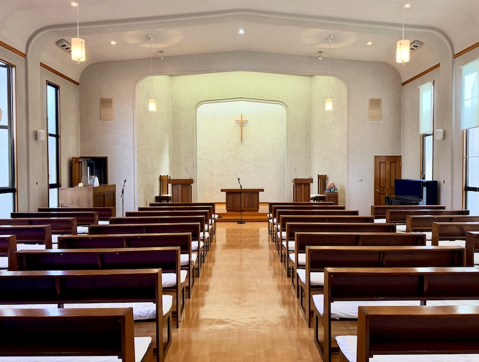
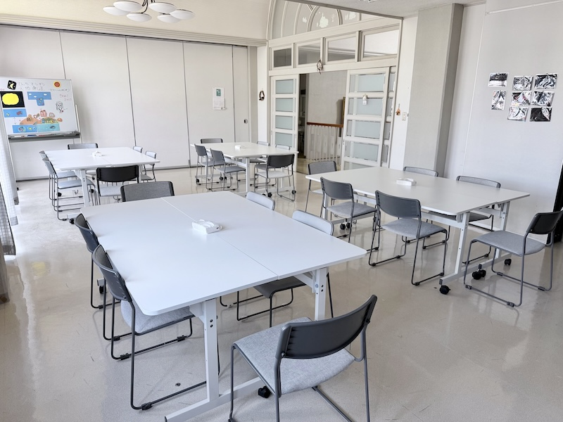
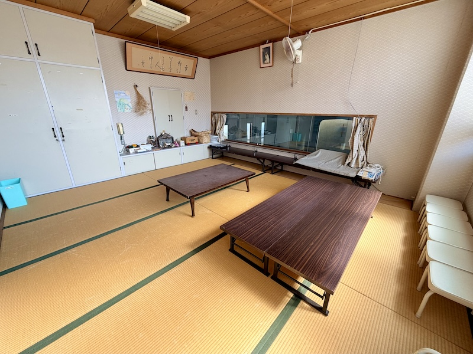

礼拝堂
毎週日曜日に主日礼拝を行う、教会の中心となる場所です。コンサートや講演会などにも用いられています。
本ページは内容確認のための試作ページです。現在、正式公開はしていません。
鳥取教会には、礼拝堂、集会室、和室、ラウンジなどの施設があります。それぞれの施設についてご紹介します。

毎週日曜日に主日礼拝を行う、教会の中心となる場所です。コンサートや講演会などにも用いられています。
定例役員会や諸委員会の会議、さまざまな集会に用いられています。

月に一度のうどんコーナーをはじめ、会議やCS（教会学校）の活動に用いられています。

主日礼拝などの際に、親子がともに礼拝を守るための場所です。
月に一度のコーヒータイムや会議などに用いられる、くつろぎの空間です。
鳥取教会の施設は、教会の活動に支障のない範囲で、地域の皆さまにもご利用いただけます。ご利用を希望される方は、内容や日時をお知らせのうえ、教会までお問い合わせください。